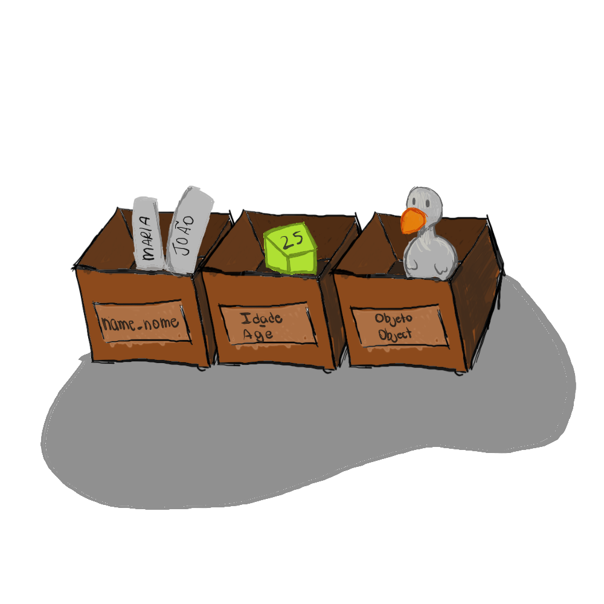
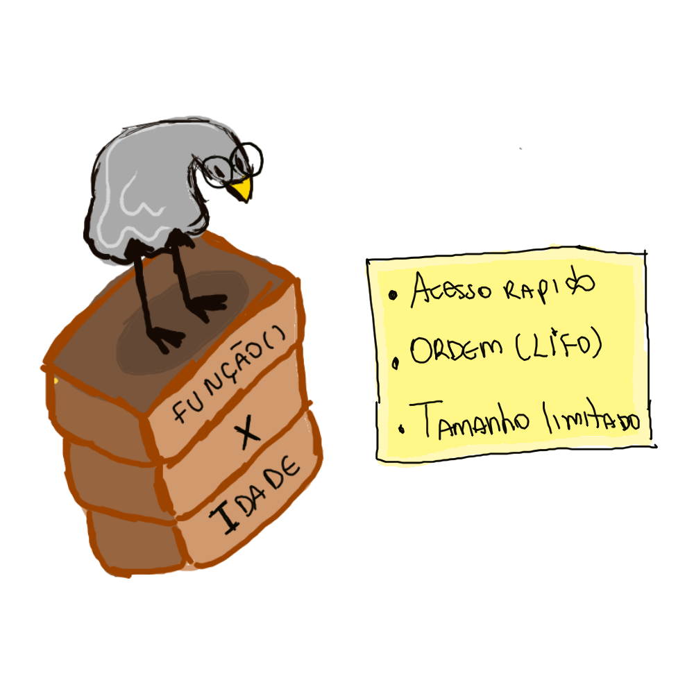

No post anterior, vimos que um algoritmo é uma sequência de passos. Mas esses passos precisam manipular informação. E informação, dentro de um computador, mora na memória.
Uma variável é basicamente um espaço na memória com um nome. Em vez de dizer "guarda esse valor no endereço 0x7FF23", você dá um nome: idade, nome, preco. O computador resolve o endereço pra você.
Tipos primitivos vs tipos referência
Essa é a divisão mais importante quando se aprende uma linguagem como Java ou Go. Ela define onde e como o valor é guardado.
Tipos primitivos
Guardam o valor diretamente na variável. Quando você declara int idade = 25, a caixinha chamada idade contém o número 25. Ponto.
Em Java, os primitivos são:
byte,short,int,long— números inteirosfloat,double— números decimaischar— um caractereboolean— verdadeiro ou falso
Tipos referência
Guardam um endereço que aponta pra um objeto na memória (heap). A variável não contém o objeto, contém "aonde ele está".
Em Java: String, arrays, classes que você cria. Em Go: slices, maps, ponteiros.
Na prática
Java:
int idade = 25; // primitivo: idade TEM 25
String nome = "Mari"; // referência: nome APONTA pra "Mari"
// Cuidado com isso:
int a = 10;
int b = a;
b = 20;
System.out.println(a); // 10 (primitivo copia o valor)
String s1 = "Oi";
String s2 = s1;
s2 = "Tchau";
System.out.println(s1); // "Oi" (String é imutável, s2 aponta pra outro lugar)Go:
package main
import "fmt"
func main() {
idade := 25 // int
nome := "Mari" // string
a := 10
b := a
b = 20
fmt.Println(a) // 10 (mesma lógica)
// Em Go, string também é imutável
s1 := "Oi"
s2 := s1
s2 = "Tchau"
fmt.Println(s1) // "Oi"
}
Tipagem estática vs dinâmica
Outra divisão importante. Diz quando o tipo é verificado.
- Estática (Java, Go): o tipo é definido na declaração e não muda. O compilador te avisa se você tentar colocar texto onde vai número.
- Dinâmica (Python, JavaScript): a mesma variável pode guardar um número agora e um texto depois. A verificação acontece em tempo de execução.
Java (estática):
int numero = 42;
numero = "texto"; // ERRO de compilaçãoPseudo-dinâmica pra comparar (Python):
numero = 42
numero = "texto" # funciona, sem erroNão existe "certo" ou "errado". Tipagem estática pega erros mais cedo; dinâmica dá mais flexibilidade. Java e Go escolheram estática.
O que acontece na memória?
Quando você declara int x = 10 em Java, o computador reserva 4 bytes na stack e escreve "10" neles. Quando você declara String s = "pato", ele reserva 8 bytes (endereço) na stack e cria o objeto "pato" no heap.
Essa diferença parece teórica, mas ela explica bugs clássicos como modificar um objeto em duas partes do código sem querer — porque ambas as partes tinham o endereço do mesmo objeto.

Resumo
- Variável = nome + espaço na memória
- Primitivo = valor guardado diretamente
- Referência = endereço pra um objeto no heap
- Java e Go são estaticamente tipadas: tipo definido na declaração
Exercícios
1. Declaração e impressão
Declare as variáveis nome (String), idade (int) e altura (double). Atribua valores a elas e imprima: "Fulano tem 25 anos e 1.75m de altura."
Mostrar sugestão
Java:
String nome = "Fulano";
int idade = 25;
double altura = 1.75;
System.out.println(nome + " tem " + idade + " anos e " + altura + "m de altura.");Go:
nome := "Fulano"
idade := 25
altura := 1.75
fmt.Printf("%s tem %d anos e %.2fm de altura.\n", nome, idade, altura)2. Troca de valores
Declare duas variáveis a = 10 e b = 20. Troque os valores delas sem usar uma terceira variável.
Mostrar sugestão
Java/Go:
a = a + b; // a = 30, b = 20
b = a - b; // a = 30, b = 10
a = a - b; // a = 20, b = 10Funciona apenas com números. Depois que aprender mais, vai ver que cada linguagem tem seu jeito — Go tem a, b = b, a.
3. (Desafio) Integer vs int
Em Java, por que Integer a = 100; Integer b = 100; System.out.println(a == b); imprime true, mas com 1000 imprime false?
Mostrar sugestão
Integer é uma classe wrapper (referência), enquanto int é primitivo. O operador == compara referências, não valores.
O Java faz autoboxing e mantém um cache de Integer para valores entre -128 e 127. Para 100, ambas as variáveis apontam pro mesmo objeto do cache. Para 1000, são objetos diferentes.
Para comparar Integers, use equals(): a.equals(b).
No próximo post, vamos ver como manipular esses valores com operadores e expressões :D